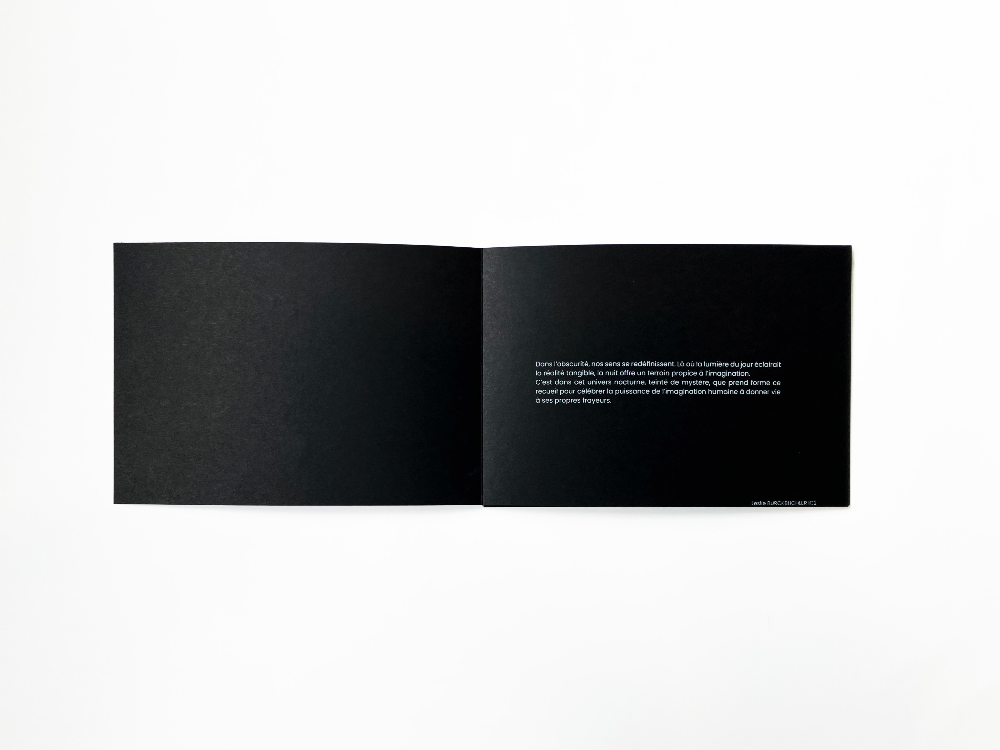
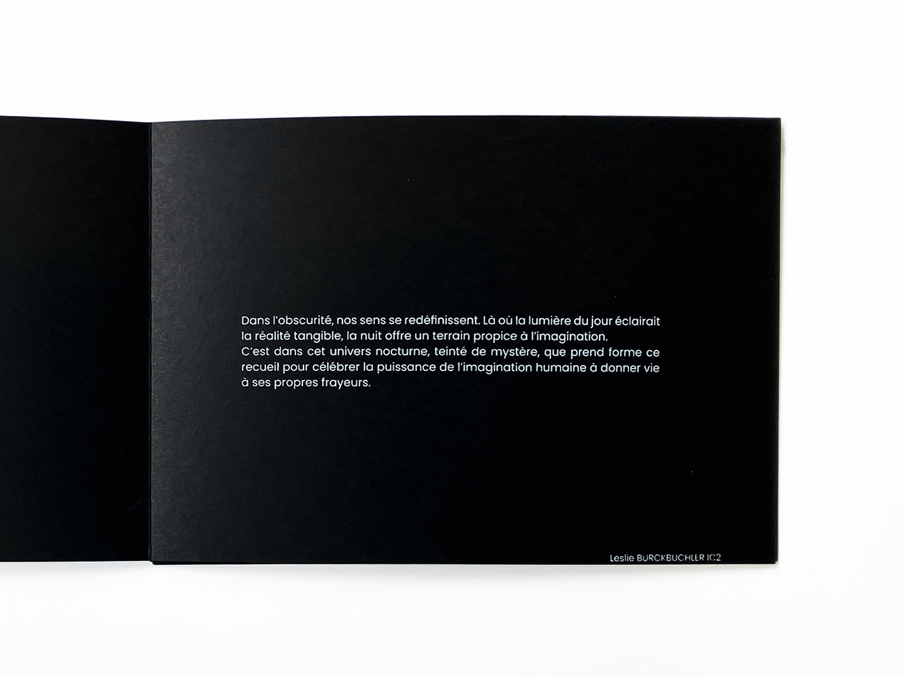
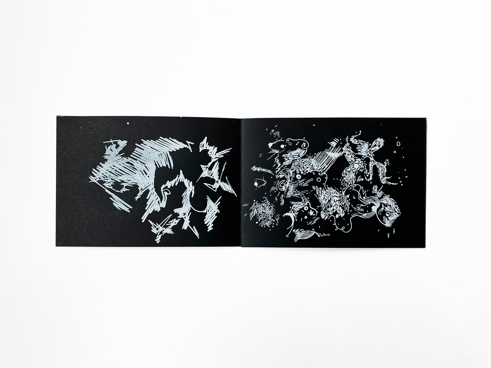
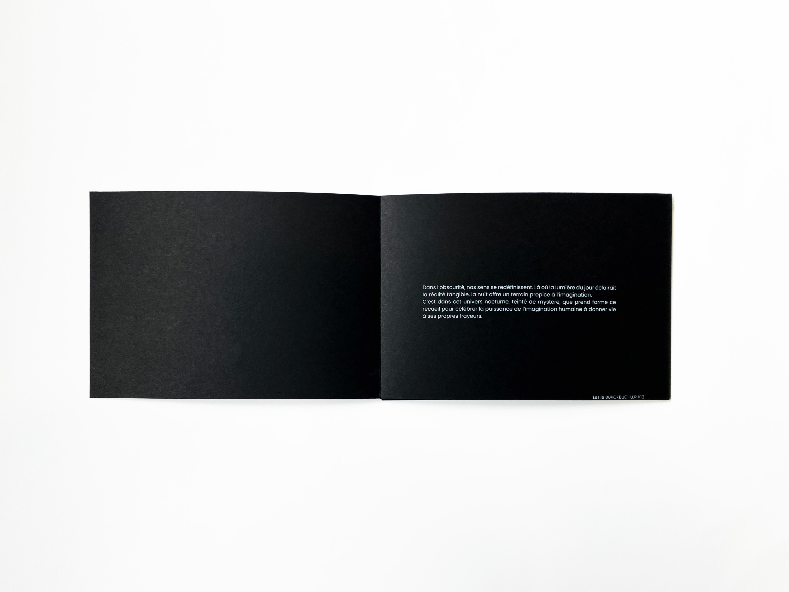
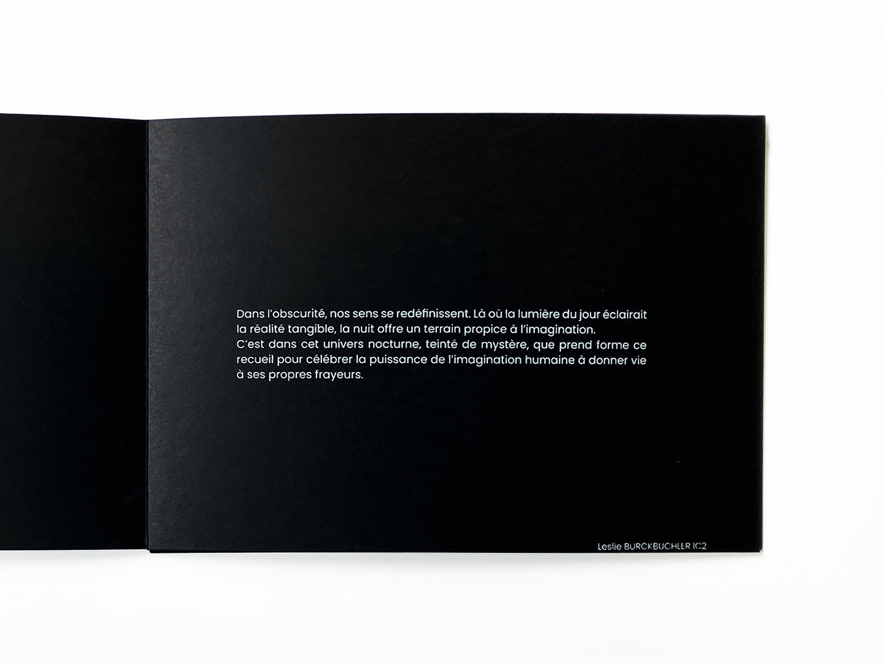
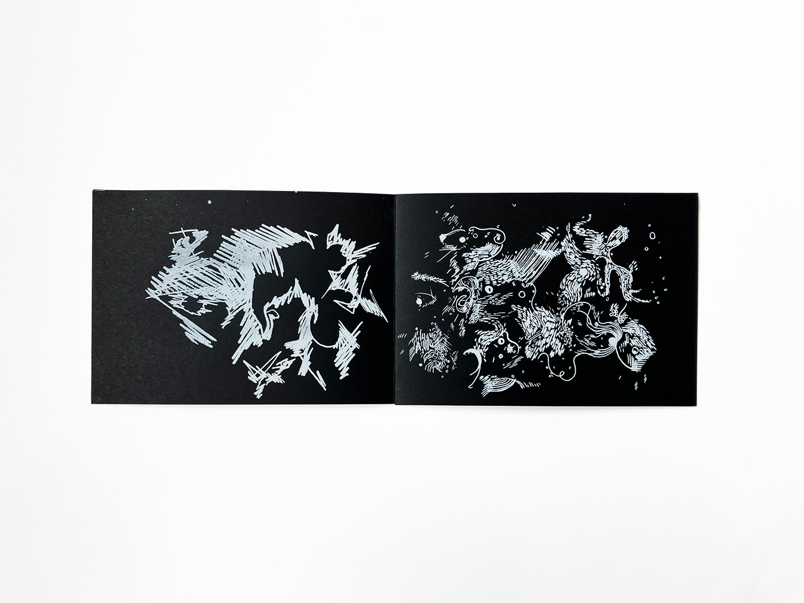
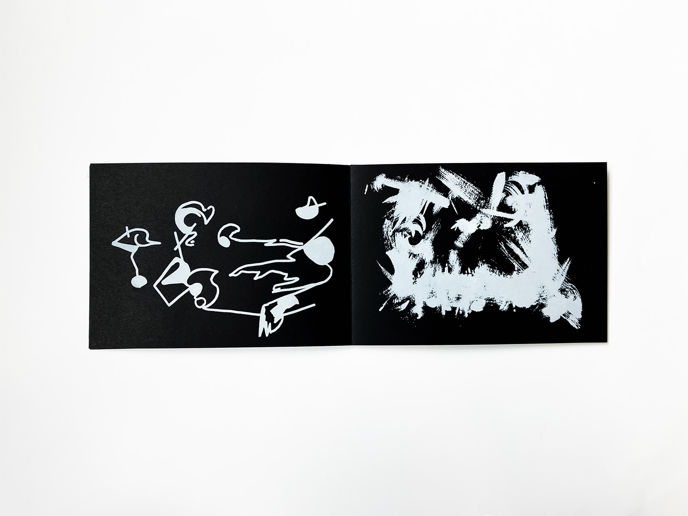
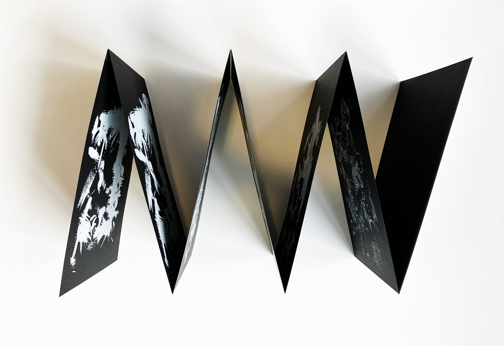
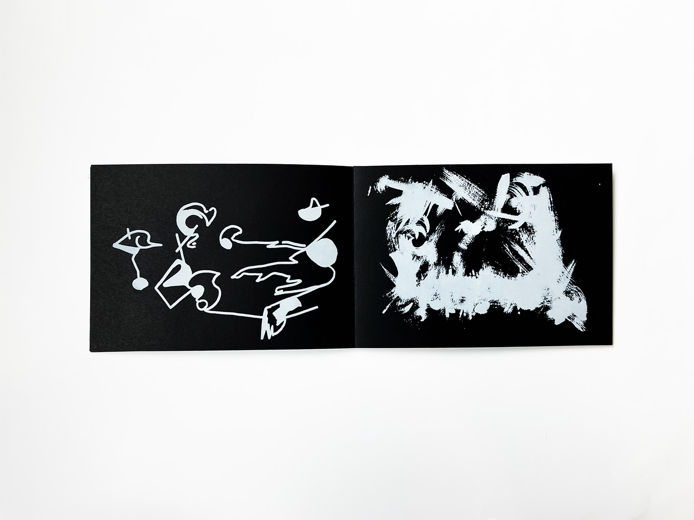
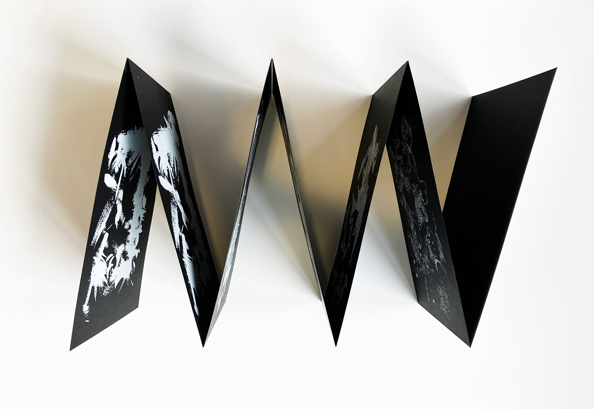

Nuit Blanche
[2024]
Dans l'obscurité, nos sens se redéfinissent. Là où la lumière du jour éclairait la réalité tangible, la nuit offre un terrain propise à l'imaginaire. C'est dans cet univers nocturne, teinté de mystère, que prend forme ce recueil, pour célébrer la puissance de l'imagination humaine à donner vie à ses propres frayeurs.
La conception graphique repose sur l’exploitation de la paréidolie à travers des dessins aux crayons, feutres et acrylique scannés. Formet A5, impression en sérigraphie.
Typographies utilisées : Avenir de Adrian Frutiger
 





 


